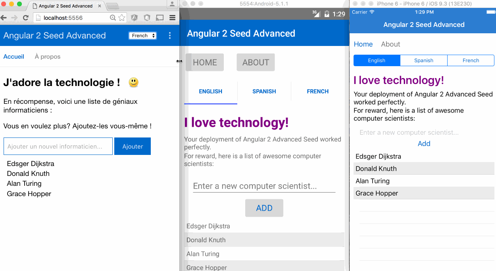
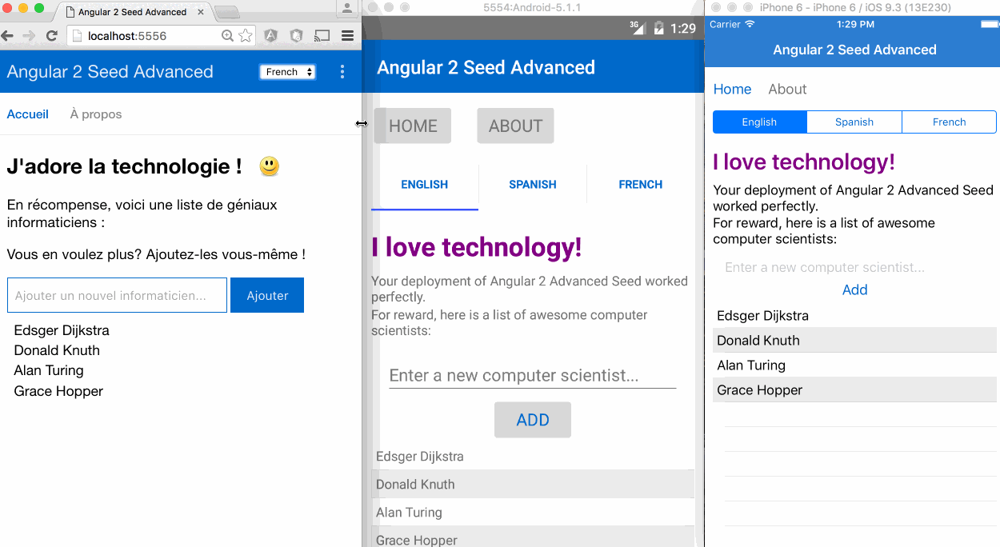
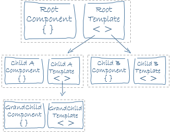
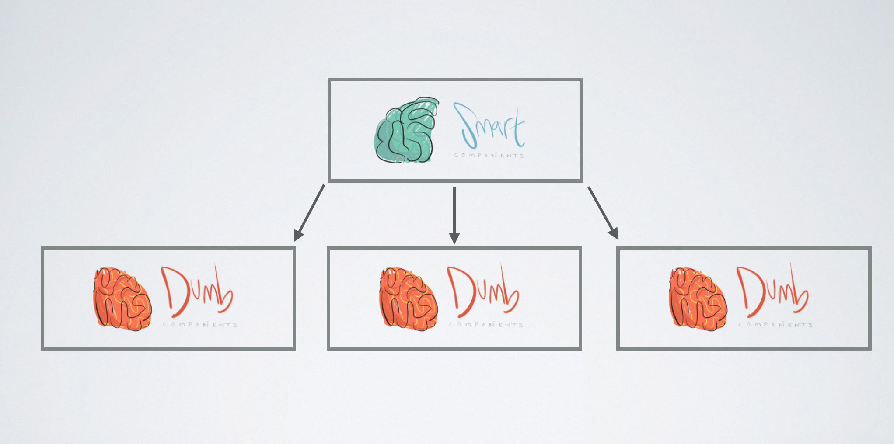
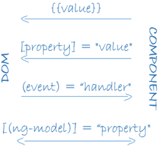

Angular2 the story part 1
Hi, my name is Tim.
CC-Lead: Automation & Tooling
Developer
Ordina Belgium
@VeeTeeDev
https://github.com/VeeTeeDev
Hi, my name is Ryan.
Front-End Dev
Angular pro
Ordina Belgium
@ryandegruyter
https://github.com/ryandegruyter
Topics
- Introduction
-
Angular-cli
- Generators
- Scripts
-
Angular2
- Why Angular2
- Framework overview
- Building blocks
- Core concepts
- Directives, Components, Component Architecture
- Modules
- Data binding
- Dependency Injection
- Data Services with Observables
Introduction
The story
- Test
- Test
- ...
Angular-cli
Test
- test
- Test
- Test
- Test
Timeline

-
Angular 2 Alpha
First alpha release
17 june 2015
-
Angular 2 Beta
First beta release
25 december 2015
-
Angular 2 RC
First release candidate
2 may 2016
-
Angular-CLI Beta
First beta release
7 may 2016 -
Angular-CLI Beta 11
SystemJS to Webpack
7 may 2016 -
Angular 2.1 beta
Beta release 2.1
23 september 2016
-
Angular-CLI Beta 16
Latest beta release
28 september 2016
Angular2
Current state: 3 october 2016
Final release version of Angular2
Release cadence: MAJOR release every 6 months
Near future: animations, angular material 2, webworkers out of experimental, speed and payload improvements
Goal end of this year is to get a simple "hello world app" to 10 KB!!
Why Angular2
Focus on mobile devices
Faster Change Detection
Improved DI
Clean code and easier to use
Embraces ES6/ECMAScript 2015/Typescript
Lazy loading, tree shaking, AoT compiling
DOM element property binding
Observable support
Component architecture, Shadow DOM support
Not only browser (Native mobile, serverside rendering, ...)
Improved testability
Framework
For building client web applications

Framework
For building cross platform (native) Mobile applications


Framework
For building cross platform Desktop applications
Programming Nirvana
All platforms sharing the same codebase
 

Building blocks

Modules, Directives, Components, Templates, Data binding, Dependency Injection, Services, Metadata
Metadata
Tells Angular how to process a class / class property / constructor parameter
We attach metadata using decorators
- @NgModule()
- @Component({ selector: 'my-app' })
- @ViewChild('elementRefName')
- @Injectable()
- @Inject()
- @Pipe()
- ...
Core
Components
Data Binding / Change detection
Depedency Injection
Extensions
- Angular Material 2
- i18n
- Animations
- Router
- Forms
- ngUpgrade
Directives
3 typesComponent / template directive
Structural Directive
Attribute Directive
Structural Directive
Used for adding or removing DOM elements
ngFor
ngIf
...
Attribute Directive
Used for changing the behavior or appearance of a DOM element
ngStyle
ngClass
...
Components
What is a component?
Directive with a Template
A custom HTML element
Ability to encapsulate behavior(javascript) and presentation(css)
Supports Shadow DOM (Web components, but unlike polymer locked into Angular2 framework)
Every Angular2 application has a tree of components
What does a basic component look like?
@Component({
selector: 'my-cmp',
templateUrl: 'my_cmp.html'
})
class MyCmp {
@Input() data: MyData;
@Output() customEvent: EventEmitter;
//...
}
Component API
Data flows into a component via input properties.
Data flows out of a component via output properties.
You use it when you instantiate a component
Component Configuration Object
@Component({
selector: 'my-cmp',
template: ``,
templateUrl: 'my_cmp.html',
providers: [],
styles: [],
encapsulation: ViewEncapsulation,
changeDetection: ChangeDetectionStrategy
})
Rendering a component
Define a selector (prefix to prevent conflicts)
Define a template
Providers
Each component has its own injector
Used to inject services
Lifecycle methods
- ngOnChange
- ngOnInit
- ngDoCheck
- ngAfterContentInit
- ngAfterContentChecked
- ngAfterViewInit
- ngAfterViewChecked
- ngOnDestroy
Component architecture
React inspired
Dumb components (presentational)
Smart components (container)
Testing a component
- Isolated
- Shallow
- Integrated / deep
Component testing: isolated
- Used for testing components without rendering them
- Test like any other Typescript class / Javascript object
- Easy to create mocks of dependencies with jasmine
beforeEach(() => {
mockService = jasmine.createSpyObj('myService', ['getContact']);
component = new MyComponent(mockService);
});
mockService.getContact.and.returnValue(Promise.resolve(mockResponse));
Component testing: Shallow
Render the template
Isolated by not rendering the component's children
Use the TestBed utility class
beforeEach(() => {
TestBed.configureTestingModule({
declarations: [AppComponent],
schemas: [NO_ERRORS_SCHEMA]
});
fixture = TestBed.createComponent(AppComponent);
});
Component testing: Integrated
Exercise the integration of components
beforeEach(() => {
TestBed.configureTestingModule({
imports: ['MdInputModule', 'MdCardModule']
declarations: [AppComponent],
providers: ['ContactsService']
});
fixture = TestBed.createComponent(AppComponent);
});
Angular-cli
- ng generate component name-with-dashes
- ...
- ...
- ...
Running shizzle!
Exercise
checkout out the repostitory on right tag
- Generate components
- Add tests
- Build components
- Add in html
Running shizzle!
Modules
Modules
ES2015 Modules
Angular Modules
ES2015 module system
export const AUTH_MSG: string = `Authorizing`;
import { AUTH_MSG } from '../constants/';
Create a barrel to export multiple modules
Each module should export 1 thing
What are Angular2 modules?
Group of inter-related Angular2 primitives
Every application has atleast 1 root module
- Directives
- Pipes
- Services
- Components
Example modules that come with the framework
Reactive forms
Router module
Browser module
@NgModule Decorator
import { BrowserModule } from '@angular/platform-browser';
import { NgModule } from '@angular/core';
import { AppComponent } from './app.component';
@NgModule({
declarations: [AppComponent, MyComboboxComponent,
CollapsibleDirective, CustomCurrencyPipe],
imports: [BrowserModule],
exports: [MyComboboxComponent],
providers: [UserService, LessonsService]
})
export class ExampleModule {
}
declarations: define ownership
imports: import other modules
exports: export a declaration for other modules
providers: global services
Root module
import { BrowserModule } from '@angular/platform-browser';
import { NgModule } from '@angular/core';
import { AppComponent } from './app.component';
@NgModule({
declarations: [AppComponent, MyComboboxComponent,
CollapsibleDirective, CustomCurrencyPipe],
imports: [BrowserModule],
exports: [MyComboboxComponent]
providers: [UserService, LessonsService],
bootstrap: [AppComponent]
})
export class ExampleModule {
}
bootstrap: []
import the browsermodule
Module Providers
Enrich the global application state
registered with the root injector
Lazy loading
Modules will get a custom injector
Bootstrap your root module
JIT, Just in time, dynamic bootstrap
AoT, Ahead of Time, static boostrap
JIT, Just in time, dynamic bootstrap
import {platformBrowserDynamic} from "@angular/platform-browser-dynamic";
@NgModule({...})
export class AppModule {
}
platformBrowserDynamic().bootstrapModule(AppModule);
Compiler is bundled with the app
Compiles the app at runtime
Good during development
Bigger application bundle => bigger filesize
AoT, Ahead of Time, static boostrap
npm install @angular/compiler-cli --save
./node_modules/.bin/ngc -p ./src
import { platformBrowser } from '@angular/platform-browser';
import { AppModuleNgFactory } from './main.ngfactory';
// Launch with the app module factory.
platformBrowser().bootstrapModuleFactory(AppModuleNgFactory);
Compiler is NOT bundled with the app
Compiles the app during build
Recommended for production
No compiler => Smaller bundle => smaller filesize
NgModule metadata helps with AoT
Feature modules
Extend the global application
Need CommonModule
Data binding
Component <-> template communication
4 forms of data binding
- {{Interpolation}} -> to the dom
- [one way input] -> to the dom
- (one way output) <- from the dom
- [(two way)] <-> both directions


Component communication
Parent component <-> child component
One way binding syntax: From component to template
Interpolation
Property binding
Attribute property binding
Class property binding
Style property binding
Use template expression (produces value, getter)
Interpolation
{{ Hello world }}

Double curly braces {{}}
Most often used between HTML element tags
Property binding

Square brackets []
Most often used with attributes
Interpolation vs Property binding?
Choose wichever you or your team prefers
Attribute Property binding
Binding target prefixed with attr
Used when there is no 1 to 1 mapping between attribute and DOM property
Class Property binding
Binding target prefixed with class
Used for adding or removing css classes
Evaluates the expression to a boolean
Style Property binding
Binding target prefixed with style
Setting inline styles dynamically
One way binding syntax: From template to component
Event binding
Use template statements (side effect, setter)
Two way binding syntax: Component <-> template
ngModel
Use template expression (produces value, getter)
FormsModule is required
Change detection

When an expression inside the template changes, the view should update and rerender
- Watch the data for changes (Change detection)
- Propagate the change to the DOM
Obervables and services
Dependency Injection
Central idea
We don't create new instances of classes or objects. We request an instance in the constructor parameter list using a type token
@Injectable()
class MyService{
private _otherService: OtherService;
constructor(otherService: OtherService){
this._otherService = otherService;
}
}
Standalone
DI System can be used standalone
ReflectiveInjector API
Injectors
Always 1 root injector
Multiple child injectors
Allows for multiple instances of the same type
How many injectors?
Angular doesn't literally create a separate injector for each component. Every component doesn't need its own injector and it would be horribly inefficient to create masses of injectors for no good purpose. But it is true that every component has an injector (even if it shares that injector with another component) and there may be many different injector instances operating at different levels of the component tree. It is useful to pretend that every component has its own injector.
Why DI?
No new operator all over your codebase
Switch between different implementations
Program to an interface instead of a concrete type
Easy to mock and test
Program to an interface
Interfaces are a compile time artifact
They dissapear once the application gets compiled
Injector cannot map an interface token
Class implements class
OpaqueToken
How to use it?
Register a provider in a component/ngmodule providers metadata property
A provider provides a concrete instance to the injector
@Component({
providers: [OtherService]
})
class MyCmp{
private _otherService: OtherService;
constructor(otherService: OtherService){
this._otherService = otherService;
}
}
Observables
RxJS
Event based programming / Reactive programming
A collection of values over any amount of time
Highly composable
Push based
HttpModule
Observables are used to make AJAX requests
You can still use promises
But observables are more powerfull
Advantages Observables over Promises
Able to cancel a request
Easier to handle progress events
Reusable
Multiple values
Composable
Observable binding syntax
async pipe
Can also be used to bind promises
@Component({...})
export class MyCmp{
interval$: Observable;
constructor(){
this.interval$ = Observable.interval(1000).map(x=>"Count: "+x);
}
}
{{interval$ | async}}
Angular-cli
- ng generate service name-with-dashes
- ...
- ...
- ...
Running shizzle!
Exercise
checkout out the repostitory on right tag
- Part 1: service
- Part 2: observables
Running shizzle!
Exercise: Part 1
- ...........
- ...........
Running shizzle!
Exercise: Part 2
- ...........
- ...........
Running shizzle!
Regards Jworks!
Try not to get lost...!